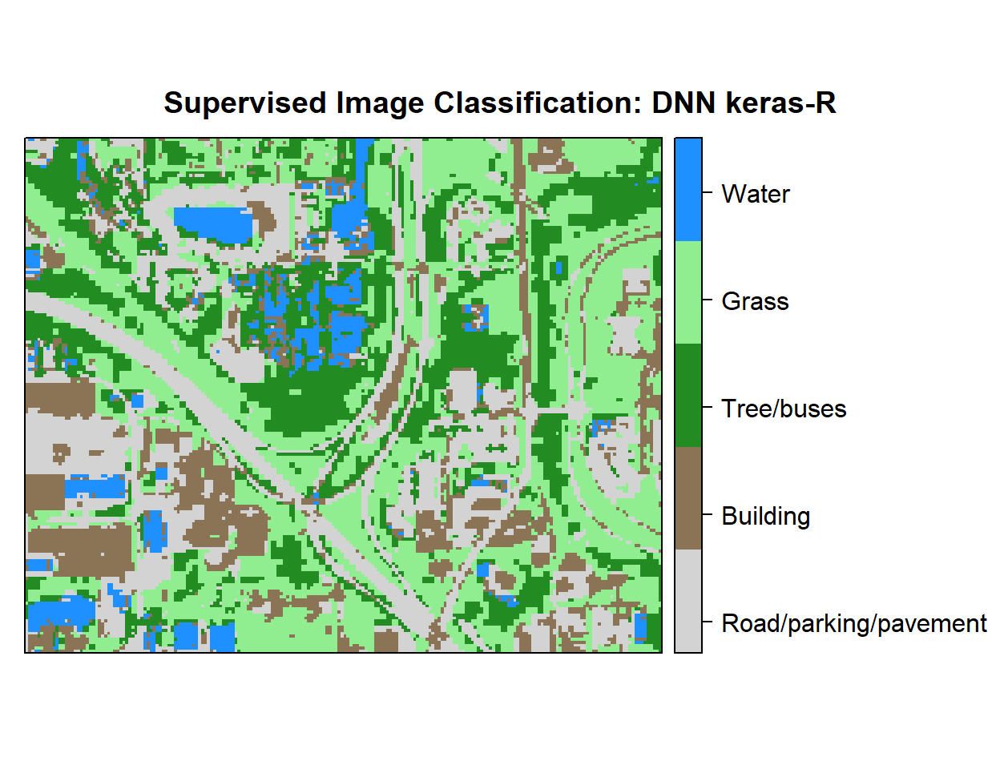

Deep Neural Network Supervised Image Classification with Keras/TensorFlow
Deep Neural Network or Deep Dearningis based on a multi-layer feed forward artificial neural network that is trained with stochastic gradient descent using back-propagation. The network can contain many hidden layers consisting of neurons with activation functions. Advanced features such as adaptive learning rate, rate annealing, momentum training, dropout, L1 or L2 regularization, check pointing, and grid search enable high predictive accuracy. Each compute node trains a copy of the global model parameters on its local data with multi-threading (asynchronously) and contributes periodically to the global model via model averaging across the network.
This tutorial will show how to implement Deep Neural Network for pixel based supervised classification of Sentinel-2 multispectral images using keras package in R under Windows 10.
keras is a popular Python package for deep neural networks with multiple back ends, including TensorFlow, Microsoft Cognitive Toolkit (CNTK), and Theano. Two R packages allow you to use [Keras[(https://keras.rstudio.com/)] from R: keras and kerasR. The keras package is able to provide a flexible and feature-rich API and can run both CPU and GUP version of TensorFlow in both Windows and Linux. If you want to run this tutorial with GUP version of TensorFlow you need following prerequisites in your system:
NVIDIA GUP: First, you must make sure weather your computer is running with NVIDIA® GPU or not. Follow the instruction as described here
CUDA® Toolkit: If you have an NVIDIA® GPU in your system, you need to download and install CUDA Toolkit v10.0. Detail installation steps can be found here
cuDNN SDK 7.4.1: The download the zip file version cuDNN v7.0 for your CUDA Toolkit v9.0.You need to extract the zip file and add the location where you extracted it to your system PATH. Detail installation steps can be found here here.
Detail installation steps of Keras back-end GPU or CUP version of Tensorflow can be found here.
Import packages
library(rgdal)
library(raster)
library(dplyr)
library(plyr)
library(keras) # karas api in R
library(tfruns) # Create and manage unique directories for each 'TensorFlow' training run.
library(tfestimators) # Interface to 'TensorFlow' Estimators The data could be available for download from here.
# Define data folder
dataFolder<-"D:\\Dropbox\\Spatial Data Analysis and Processing in R\\DATA_RS_DNN"Load point and grid data
point<-read.csv(paste0(dataFolder,".\\Sentinel_2\\point_data.csv"), header = T)
grid<-read.csv(paste0(dataFolder,".\\Sentinel_2\\prediction_grid_data.csv"), header = T)Creat data frames
point.df<-cbind(point[c(3:13)])
grid.df<-grid[c(4:13)]
grid.xy<-grid[c(3,1:2)]Convert Class to dummy variables
point.df[,11] <- as.numeric(point.df[,11]) -1 Convert data as matrix
point.df<- as.matrix(point.df)
grid.df <- as.matrix(grid.df)Set dimnames to NULL
dimnames(point.df) <- NULL
dimnames(grid.df) <- NULLStandardize_the data: ((x-mean(x))/sd(x))
point.df[, 1:10] = scale(point.df[, 1:10])
grid.df[, 1:10] = scale(grid.df[, 1:10])Split data
## Determine sample size
ind <- sample(2, nrow(point.df), replace=TRUE, prob=c(0.80, 0.20))
# Split the `Split data
training <- point.df[ind==1, 1:10]
test <- point.df[ind==2, 1:10]
# Split the class attribute
trainingtarget <- point.df[ind==1, 11]
testtarget <- point.df[ind==2, 11]Hyperparameter flag
FLAGS <- flags(
flag_numeric('dropout_1', 0.2, 'First dropout'),
flag_numeric('dropout_2', 0.2, 'Second dropout'),
flag_numeric('dropout_3', 0.1, 'Third dropout'),
flag_numeric('dropout_4', 0.1, 'Forth dropout')
)Define an optimizer (Stochastic gradient descent optimizer)
optimizer <- optimizer_sgd(lr=0.01)Compile the model:
model %>% compile(
loss = 'sparse_categorical_crossentropy',
optimizer = optimizer,
metrics = 'accuracy'
)Fit the model to the data
history<-model %>% fit(
training, trainingtarget,
epochs = 10,
batch_size = 100,
shuffle = TRUE,
validation_split = 0.2
)Plot history:
plot(history)
Evaluate the model
score <- model %>% evaluate(test, testtarget, batch_size = 100)
cat('Test loss:', score[[1]], '\n')## Test loss: 0.5991603cat('Test accuracy:', score[[2]], '\n')## Test accuracy: 0.8772518Prediction & confusion matrix - test data
class.test <- model %>%
predict_classes(test, batch_size = 100)
# Confusion matrix
table(testtarget,class.test)## class.test
## testtarget 0 1 2 3 4
## 0 1003 32 12 13 45
## 1 138 612 17 4 118
## 2 120 7 1472 22 0
## 3 0 0 56 934 0
## 4 0 0 2 0 167Predicted Class Probability
prob.test <- model %>%
predict_proba(test, batch_size = 100)Prediction at grid locations:
Class.grid <- model %>%
predict_classes(grid.df, batch_size = 100)Detach keras, tfruns, tftestimators
detach(package:keras, unload=TRUE)
detach(package:tfruns, unload=TRUE)
detach(package:tfestimators, unload=TRUE)Change column name:
class<-as.data.frame(Class.grid)
new.grid<-cbind(x=grid.xy$x, y=grid.xy$y,Class_ID=class )
colnames(new.grid)[3]<-"Class_ID"
new.grid.na<-na.omit(new.grid)Load landuse ID file
#### Join Class Id Column
ID<-read.csv(paste0(dataFolder,".\\Sentinel_2\\Landuse_ID_keras.csv"), header=TRUE)
ID## Class_ID Class Description
## 1 0 Class_1 Parking/road/pavement
## 2 1 Class_2 Building
## 3 2 Class_3 Tree/bushes
## 4 3 Class_4 Grass
## 5 4 Class_5 WaterConvert to raster
#### Convert to raster
x<-SpatialPointsDataFrame(as.data.frame(new.grid.na)[, c("x", "y")], data = new.grid.na)
r <- rasterFromXYZ(as.data.frame(x)[, c("x", "y", "Class_ID")])Plot map:
# Create color palette
myPalette <- colorRampPalette(c("light grey","burlywood4", "forestgreen","light green", "dodgerblue"))
# Plot Map
LU<-spplot(r,"Class_ID", main="Supervised Image Classification: DNN keras-R" ,
colorkey = list(space="right",tick.number=1,height=1, width=1.5,
labels = list(at = seq(0,3.8,length=5),cex=1.0,
lab = c("Road/parking/pavement" ,"Building", "Tree/buses", "Grass", "Water"))),
col.regions=myPalette,cut=4)
LU
Write raster
#writeRaster(r, filename = paste0(dataFolder,".\\Sentinel_2\\DNN_keras_Landuse.tiff"), "GTiff", overwrite=T)